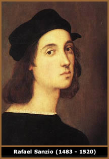

Se utilizássemos em uma conversa
com homens medievais a expressão Idade Média, eles
não teriam idéia do que isso poderia significar.
Eles como todos os homens de todos os tempos históricos
se viam vivendo na época contemporânea. De foto,
falarmos em Idade Antiga ou Média representa uma rotulação,
uma satisfação da necessidade de se dar nome aos
momentos passados.
No caso do que chamamos de Idade Média,
foi o século XVI que elaborou tal conceito. Ou melhor,
tal preconceito, pois o termo expressava um desprezo indisfarçado
pelos séculos localizados entre a Antiguidade Clássica
e o próprio século XVI. Tudo que estivera entre
estes dois picos de criatividade artístico-literário
(do ponto de vista do século XVI) não passava de
um hiato, de um intervalo vago. Logo, de um tempo intermediário,
de uma Idade Média.
Era chamada de Idade Média, Idade
das Trevas, Espessa noite Gótica, por ser
vista como um período de barbárie, ignorância
e superstição. Falava em "média tempestas",
literalmente "tempo médio", mas também
com o sentido figurado de flagelo e ruína.
A
arte medieval por fugir dos padrões clássicos, também
era vista como grosseira daí o grande pintor Rafael chamá-la
de gótica, termo então sinônimo de
bárbara. Portanto, o sentido básico mantinha-se
renascentista: a "Idade Média" teria sido uma
interrupção no progresso humano, inaugurado pelos
gregos e romanos e retomado pelos homens do século XVI.
Para o século XVII, os séculos medievais
também eram vistos como de barbárie, ignorância
e superstição. O século XVIII, antiaristocrático
e anticlerical, acentuaram o menosprezo à Idade Média,
vista como momento áureo da nobreza e do Clero.
A filosofia da época, chamada de Iluminista
por se guiar pela luz da Razão, censurava, sobretudo a
forte religiosidade medieval, o pouco apego da Idade Média
a um estrito racionalismo e o peso político da Igreja então
desfrutara.
Contudo com o Romantismo da primeira metade do
século XIX, o preconceito em relação à
Idade Média se inverteu. O ponto de partida fora a questão
da identidade nacional, que ganhara forte significado com a Revolução
Francesa. Estavam aí as raízes do Romantismo com
a sua nostalgia por este período da história. Vista
como época de fé, autoridade e tradição
o período medieval oferecia um remédio à
insegurança e aos problemas decorrentes de um culto exagerado
ao cientificismo. Assim vista como momento de origens das nacionalidades
ela satisfazia os novos sentimentos políticos do século
XIX.
Mas a Idade Média dos românticos era
tão preconceituosa quanto à dos renascentistas e
dos iluministas. Para estes, teria sido uma época negra
a ser esquecida na história. Para aqueles, um período
esplêndido, um dos grandes momentos da trajetória
humana, algo a ser imitado, prolongado. De qualquer forma, a Idade
Média permanecia incompreendida. Aos preconceitos anteriores,
juntava-se o da idealização, já antecipado
por LESSING (1729/1781): "noite da Idade Média,
que seja! Mas era uma noite resplandecente de estrelas".
Finalmente com o século XX se passou a tentar
ver a Idade Média com os olhos dela própria, não
com os daqueles que viveram noutro momento.
A função do historiador é
compreender, não julgar o passado. Mas, enfim, que conceito
tinha a Idade Média os próprios medievos? Questão
difícil, pois enquanto o Clero oferecia várias respostas
a partir de interpretações teológicas, o
povo de maneira geral mantinha-se ainda preso a concepções
antigas pré-cristãs (pagãs).
Simplificadamente, essa bipolarização
quanto à história partia de duas visões distintas
quanto ao tempo. A postura pagã, fortemente enraizada na
psicologia coletiva, aceitava a existência de um tempo cíclico,
daquilo que se chamou de "mito do eterno retorno".
Com o Cristianismo a história se torna linear:
há um ponto de partida (gênese), um de inflexão
(encarnação) e um de chegada (juízo final).
Portanto, linear, mas não ao infinito, pois há um
tempo que só Deus conhece limitando o desenrolar da passagem
humana.
Colocando na confluência dessas três
concepções (circular, tempo de Deus e linear), a
sociedade medieval oscilava quanto à importância
da quantificação do tempo. Como na Antiguidade o
dia estava dividido em 12 horas e a noite também, independente
da época do ano.
Por não terem uma precisão do tempo
(como toda sociedade agrária, a medieval guiava-se pelo
ritmo mais visível da natureza, o sol, a lua, as estações)
os medievos não tinham um conceito claro sobre sua própria
época. De maneira geral prevalecia o sentido de viverem
em tempos modernos, devido à consciência que tinham
do passado, dos tempos "Antigos", pré-cristãos.
Estava sempre também a idéia de que se caminhava
para o fim dos tempos, não muito distante.
Na verdade a psicologia medieval esteve constantemente
preocupada com a proximidade do Apocalipse. Assim havia uma visão
geral de pessimismo do presente, porém carregada de esperança
com o triunfo do Reino de Deus. Nesse sentido, tal visão
trazia em si a concepção de um tempo médio
que precedia a Nova Era.
Em suma, num certo sentido a Idade Média
estava tão interessada na história – seqüência
dos fatos passados - quanto no fim dela – milenarismo.
Texto original
de Patrícia Barboza da Silva
Extraído
e adaptado de www.brasilescola.com